For life's hardest, most human moments. A place to be met where you are, seen, heard and never alone in it.
↓What ties it together
Showing up where it matters.
Two kinds of goodbye, one belief underneath. Hard moments are easier to carry when someone is willing to sit in them with you. Whether it's a parent, a partner or the dog who's been by your side for fourteen years, the work is the same. Be present. Listen. Don't try to fix it.
Guided by Jason O'Malley. Read his story